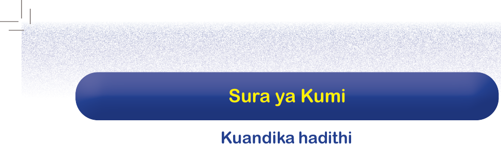
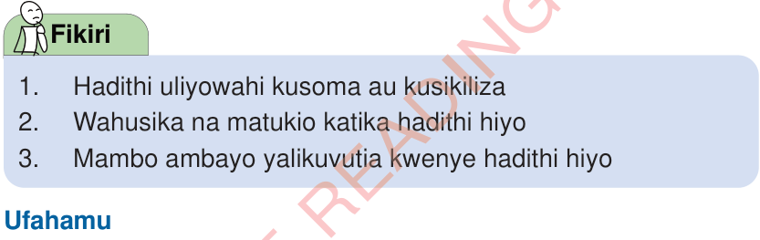

Utangulizi
Katika sura hii, utajifunza namna ya kuandika hadithi kwa kufuata kanuni zake. Vilevile, utaandika na kusimulia / kutumia lugha ya alama kuelezea hadithi. Umahiri utakaoujenga, utakuwezesha kuandika hadithi kwa mtiririko sahihi wa matukio na kwa kuzingatia alama sahihi za uandishi.

Fikiri
- 1. Hadithi uliyowahi kusoma au kusikiliza
- 2. Wahusika na matukio katika hadithi hiyo
- 3. Mambo ambayo yalikuvutia kwenye hadithi hiyo
Ufahamu
Soma hadithi ifuatayo, kisha jibu maswali yanayofuata.
Vunja mbavu
Tamboni na Tufye ni mabinti wanaosoma Darasa la Nne katika Shule ya Msingi Umoja. Mabinti hawa ni marafiki walioshibana sana na wana tabia zinazofanana. Mara nyingi, hupenda kuongea mambo yanayochekesha sana. Wanafunzi wenzao hupenda kuwasikiliza kwa kuwa mazungumzo yao huwa yanawavunja mbavu. Kamagaza, Jedio na Zuma huangua kicheko kila wanapowaona Tamboni na Tufye.
Siku moja, Tamboni na Tufye walikuwa wametoka kuwinda ndege majira ya jioni. Walipofika njiani, waliona mti mrefu wenye matawi makubwa yaliyosambaa vizuri. Wakashauriana wapande mti huo ili waweze kuona mazingira ya mbali zaidi. Wanafunzi wenzao nao wakawafuata.